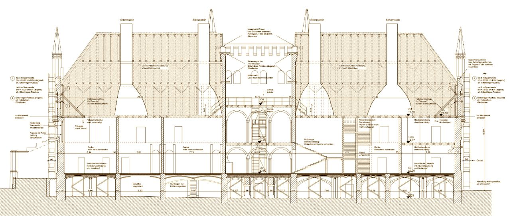
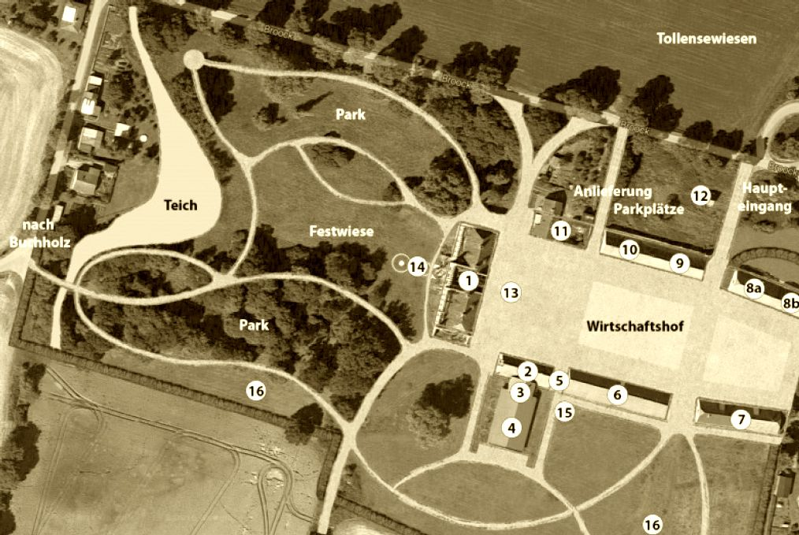

Die Zukunft

Broocker Schlossanlage
Das Landesamt für Kultur- und Denkmalpflege MecklenburgVorpommern hat uns die Genehmigung für einen „vorgezogenen förderunschädlichen Maßnahmenbeginn“ erteilt. Dies ist noch keine offizielle Förderzusage, aber ein „vorgezogener Maßnahmenbeginn“ wird i.d.R. nicht genehmigt, wenn nicht die volle Absicht zu fördern besteht. Laut Schreiben der Beauftragten der Bundesregierung für Kultur und Medien, Frau Staatsministerin Prof. Monika Grütters, können wir uns außerdem über eine Förderung aus dem Denkmalpflegeprogramm „National wertvolle Kulturdenkmäler“ freuen. Philipp Amthor, das zweitjüngste Mitglied des Deutschen Bundestags, hat sich gegenüber Frau Prof. Grütters wiederholt für uns stark gemacht. Sein ehrliches Interesse an unserem Projekt und das daraus resultierende Engagement hat sicherlich zu diesem wichtigen Erfolg beigetragen. Aktuell laufen die Ausschreibungen und das Vergabeverfahren. Die Baustelleneinrichtung mit anschließendem Baustart erwarten wir für Mitte/Ende September. Die Maßnahmen zur Notsicherung des Schlossgebäudes sollen bis Mitte 2019 ihren Abschluss finden. Das Ziel, den Einsturz des Hauses zu verhindern und die Voraussetzung für einen sicheren Ausbau zu schaffen, dürfte spätestens im Juni/Juli erreicht sein. Für Rückfragen stehen wir jederzeit gerne zur Verfügung.Viele Grüße aus Broock Christian Schmidt
Tollensetaler Stimme 2018/09, S. 4
